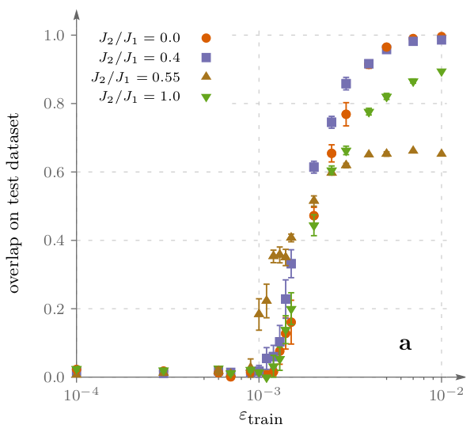

Wavefunction sign structure generalization in frustrated magnets
Tom Westerhout (Radboud University)
Nikita Astrakhantsev (University of Zurich)
Konstantin S. Tikhonov (Skolkovo Institute of Science and Technology)
Mikhail Katsnelson (Radboud University)
Andrey Bagrov (Uppsala University)
NQS for frustrated magnets

$$\hat H = J_1 \sum\limits_{\langle a, b \rangle} \boldsymbol{\sigma}_a \otimes \boldsymbol{\sigma}_b + J_2 \sum\limits_{\langle \langle a, b \rangle \rangle} \boldsymbol{\sigma}_a \otimes \boldsymbol{\sigma}_b$$
- $J_2/J_1$ allows us to tune frustration.
- Periodic clusters of 24, 30, 32, or 36 spins.
A. Szabó & C. Castelnovo, arXiv:2002.04613
K. Choo, T. Neupert, & G. Carleo, Phys. Rev. B 100, 125124 (2019)
Y. Nomura & M. Imada, arXiv:2005.14142
Expressibility & Generalization

image source: www.datarobot.com
Expressibility is the ability of a neural network to accurately represent the data.
Generalization is the ability of a neural network to correctly predict results on samples which were not included in the training dataset.
Sampling
Obtain $|\psi\rangle$ with exact diagonalization
\[ |\psi\rangle = \sum_i \psi_i |\sigma_i\rangle \]
$|\psi_i|^2$ forms a discrete probability distribution
(no Monte Carlo, no ergodicity issues)
$\varepsilon_{\text{train}} \ll 1$
training dataset
$1 - \varepsilon_{\text{train}}$
everything else (test dataset)
Training
Use two neural networks to represent $|\psi\rangle$
(which we obtained with ED):
-
"amplitude network" predicts $\log(|\psi_i|)$
regression task; minimize MSE or maximize overlap -
"sign network" predicts $\text{sign}(\psi_i)$
binary classification task; minimize cross-entropy
Sign structure generalization
- 24 site clusters; $\varepsilon_\text{train} \approx 10^{-2}$
- Generalization quality reflects phase transitions

Amplitudes vs Signs
24 site Kagome lattice

- Hybrid states:
-
- amplitudes from NN & signs from ED;
- signs from NN & amplitudes from ED.
Sign structure is much harder to learn!
More data?
24 site Kagome lattice

24 site square lattice
Generalization quality exhibits a phase transition.
There is a critical amount of data necessary to learn the sign structure.
Scaling with system size
Square lattice (24, 32, & 36 sites)

$N$ — Hilbert space dimension;
$N_\text{critical}$ — critical dataset size
Critical dataset size grows slowly with the sytem size.
What about VMC?

No problem expressing the state.
VMC results mimic the behavior of generalization quality.
D. Kochkov & B.K. Clark, arXiv:1811.12423
Conclusions
- Good generalization is not guaranteed, especially in frustrated phases.
- Learning signs is a much more difficult task than learning amplitudes.
- Generalization quality as function of training dataset exhibits a sharp increase at some critical $\varepsilon_\text{train}$.
For more info: Westerhout et al, Nat Commun 11, 1593 (2020)